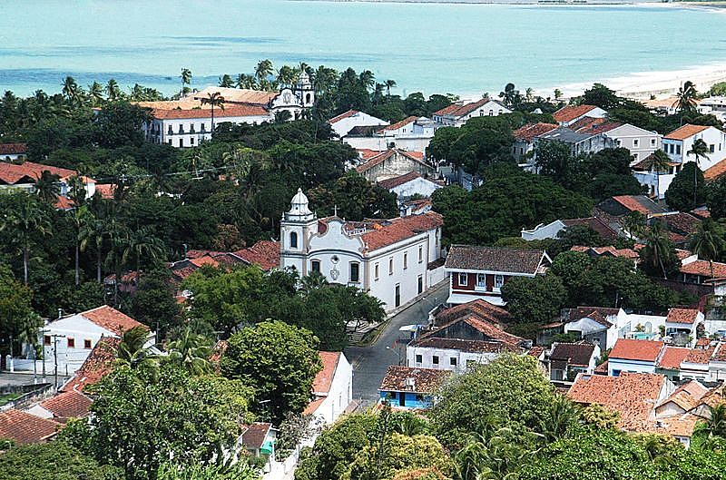

Sitio Historico
Centro Histórico de Olinda, também chamado de Cidade Alta, abrange a área histórica do município brasileiro de Olinda, no estado de Pernambuco. Quase um terço da área total do município é tombado.
Praias
O litoral nordestino foi contemplado com belas praias. Com Olinda, uma cidade cultural do interior do Estado do Pernambuco, não foi diferente, visto que possui uma faixa litorânea com excelentes praias. A cidade não dispõe de muitas praias, mas dentre as existentes!